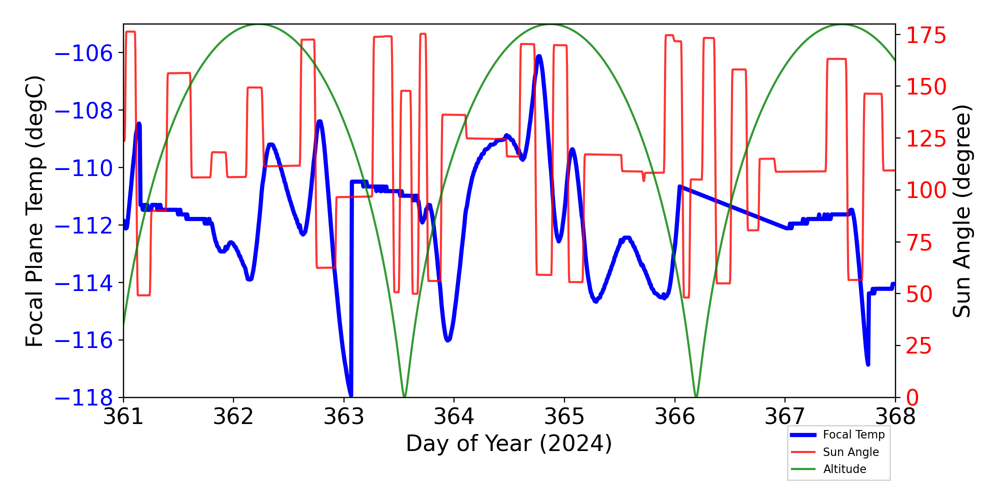

| CCD0 | CCD1 | CCD2 | CCD3 | CCD4 | CCD5 | CCD6 | CCD7 | CCD8 | CCD9 | |
|---|---|---|---|---|---|---|---|---|---|---|
| Previously Unknown Bad Pixels | ||||||||||
| Current Warm Pixels | (985,393) (910,239) | (837,378) (178,149) (803,225) (104,31) (526,66) (99,899) | (21,95) | (670,387) | (335,412) | |||||
| Flickering Warm Pixels | (283,278) | (370,70) (427,125) (802,665) | (726,537) (665,25) (353,201) | (931,553) (680,391) (617,159) (394,80) (811,637) | (161,206) (367,511) (282,385) (233,227) (357,303) (263,317) (877,408) (233,102) (369,376) (669,577) (728,340) | (849,169) (1000,214) (884,31) | (597,187) (881,53) (838,239) (893,490) (332,324) (139,109) (675,304) (182,474) (275,393) (136,65) | (150,374) (749,477) | ||
| Current Hot Pixels | ||||||||||
| Flickering Hot Pixels | ||||||||||
| Warm column candidates | 512 510 1022 | 512 1022 | ||||||||
| Flickering Warm column candidates |
ACIS Focal Plane Temperature
For this period, 6 peaks are observed.
| Day (DOY) | Temp (C) | Width (Days) | |
|---|---|---|---|
| 359.40 | -116.00 | 0.11 | |
| 359.64 | -108.74 | 0.62 | |
| 360.32 | -107.97 | 0.53 | |
| 361.04 | -106.31 | 0.74 | |
| 361.94 | -109.86 | 0.97 | |
| 363.66 | -103.10 | 4.25 |
Weekly focal plane temperature with sun angle, earth angle, and altitude overplotted. Sun angle is the solar array angle, that is the angle between the sun and the optical axis (+X axis). The earth angle is the angle between earth and the ACIS radiator (+Z axis). Altitude varies from 34 kkm to 128 kkm.

SIM Movements
17 TSC moves this period
| weekly average time/step | 0.00135 s |
|---|---|
| mission average time/step | 0.00132 s |
Telemetry
New violations or new extrema are shown in blue cells.
| MSID | 12/27/24 | 12/28/24 | 12/29/24 | 12/30/24 | 12/31/24 | 01/01/25 | 01/02/25 | yellow limits (lower) upper | red limits (lower) upper | Units | Description |
| AFTBLKHDT | 308.47 | 308.62 | 310.14 | (260.2) 303.0 |
(250.2) 308.0 |
TEMP | AFT BULKHEAD TEMP | ||||
| AWD1TQI | (-3.39) | (-1.22) 1.22 |
(-3.3) 3.3 |
AMP | WHEEL 1 TORQUE CURRENT | ||||||
| AWD4TQI | (-3.43) | (-1.22) 1.22 |
(-3.3) 3.3 |
AMP | WHEEL 4 TORQUE CURRENT | ||||||
| AWD6TQI | (-3.47) | (-3.39) | (-1.22) 1.22 |
(-3.3) 3.3 |
AMP | WHEEL 6 TORQUE CURRENT | |||||
| CALPALV | (112.00) | (126.0) 128.0 |
(125.0) 129.0 |
V | Cal Pulser Amplitude | ||||||
| CTXBPWR | (0.00) | (0.00) | (0.00) | (0.00) | (36.12) 37.0 |
(36.0) 38.0 |
DBM | TRANSMITTER B OUTPUT POWER | |||
| HRMAAVG | (304.47) | (304.70) | (306.0) 308.0 |
(305.0) 309.0 |
K | AVG OF HRMA METRICS | |||||
| IMHBLV | (0.00) | (126.0) 128.0 |
(125.0) 129.0 |
(2IMHBLV) | Imaging Bot & Top MCP HV Monitor | ||||||
| IMHVLV | (79.00) | (126.0) 128.0 |
(125.0) 129.0 |
(2IMHVLV) | Imaging Bot MCP HV Monitor | ||||||
| MZOBACONE | 313.50 | 315.11 | 311.83 | 315.32 | 313.82 | 314.07 | (260.2) 303.0 |
(250.2) 308.0 |
CONE | -Z SIDE OBA CONE | |
| OBAAVG | 306.15 | 304.32 | 306.57 | 305.03 | (282.5) 300.0 |
(281.4) 301.0 |
K | OBA/TFTE TEMP | |||
| OBADIAGRAD | 4.65 | 4.59 | 4.44 | 4.34 | 4.56 | 4.42 | 4.59 | (-1.11) 3.5 |
(-2.78) 3.9 |
K | OBA DIAM GRAD |
| PZOBACONE | 309.70 | 310.95 | 308.45 | 311.40 | 309.42 | 312.40 | 309.94 | (260.2) 303.0 |
(250.2) 308.0 |
CONE | +Z SIDE OBA CONE |
| TCYZ_RW6 | (276.07) | (288.15) 363.15 |
(278.15) 404.15 |
K | RWA -6 TEMP (RWA CRNR COMP) | ||||||
| TFTERANGE | 48.10 | 49.78 | 48.89 | 49.19 | 48.78 | (16.7) 37.5 |
(11.1) 45.0 |
K | TFTE VENT/RAD TEMP |
IRUs
| Gyro Bias Drift | Gyro Bias Drift Histogram |
|---|---|

|

|
Recent Observations
| OBSID | DETECTOR | GRATING | TARGET | ANALYSIS | ACA |
|---|---|---|---|---|---|
| 30697 | ACIS-67 | NONE | NGC1300 | OK | OK |
| 30502 | ACIS-56789 | HETG | Vela X-1 | OK/NA | OK |
| 30081 | ACIS-0123 | NONE | NGC1977 point | OK | OK |
| 28561 | ACIS-67 | NONE | PSO J170.8326+20.2083 | OK | OK |
| 30503 | ACIS-56789 | HETG | Vela X-1 | OK/NA | OK |
| 30444 | HRC-I | NONE | HE 1353-1917 | OK | OK |
| 30687 | ACIS-67 | NONE | 2MASXJ06591070+2401400 | OK | OK |
| 30164 | ACIS-3678 | NONE | NGC4207 | OK | OK |
| 29841 | ACIS-0123 | NONE | PSR J1958+2846 | OK | OK |
| 29635 | ACIS-0123 | NONE | Perseus cluster E | OK | OK |
| 28078 | ACIS-67 | NONE | PS15bva KISS15s | OK | OK |
| 30695 | ACIS-67 | NONE | Gaia DR2 3428357798930628096 | OK | OK |
| 30698 | ACIS-67 | NONE | NGC1300 | OK | OK |
| 30699 | ACIS-0123 | NONE | PSR J1958+2846 | OK | OK |
| 30699 | ACIS-0123 | NONE | PSR J1958+2846 | OK | OK |
| 30486 | HRC-I | NONE | SN 2002ap | OK | OK |
| 30038 | ACIS-567 | NONE | ACT-CL J2151.9+1113 | OK | OK |
| 28631 | ACIS-0123 | NONE | Abell 370 | OK | OK |
| 30497 | ACIS-56789 | HETG | Vela X-1 | OK/NA | OK |
| 30690 | ACIS-0123 | NONE | UGC 03698 | OK | OK |
| 30700 | ACIS-0123 | NONE | PSR J1958+2846 | OK | OK |
| 30550 | HRC-S | LETG | NGC 5548 | OK/NA | OK |
| 30707 | ACIS-0123 | NONE | Orion Nebula Cluster | OK | OK |
| 30552 | HRC-S | LETG | NGC 5548 | OK/NA | OK |
| 29750 | ACIS-678 | NONE | 1eRASS J012710.5-285542 | OK | OK |
| 30708 | ACIS-0123 | NONE | Orion Nebula Cluster | OK | OK |
Trending
This week's focus is Gratings
Last reported on
Oct 17.
Only the most interesting or representative msids are shown below.
For a full listing choose the bulletted link.
| MSID | Mean | RMS | Delta/Yr | Delta/Yr/Yr | Unit | Description | |
|---|---|---|---|---|---|---|---|
| 4hposaro | -0.155 | 0.029 | 67.81 +/- 20.17 | 0.76 +/- 0.83 | na | NA | |
| 4hposbro | -0.151 | 0.029 | 68.39 +/- 20.39 | 0.77 +/- 0.84 | na | NA | |
| 4lposaro | 0.036 | 0.018 | 73.94 +/- 12.47 | 0.28 +/- 0.47 | na | NA | |
| 4lposbro | 0.038 | 0.019 | 72.99 +/- 12.82 | 0.36 +/- 0.48 | na | NA | |
| 4mp28av | 0.013 | 0.001 | 0.41 +/- 0.73 | -0.01 +/- 0.02 | V | MCE A: +28 VOLT MONITOR | |
| 4mp28bv | 0.079 | 0.005 | 2.02 +/- 3.22 | -0.03 +/- 0.12 | V | MCE B: +28 VOLT MONITOR | |
| 4mp5av | 0.019 | 0.001 | 0.49 +/- 0.78 | -0.01 +/- 0.03 | V | MCE A: +5 VOLT MONITOR | |
| 4mp5bv | 0.014 | 8.331e-04 | 0.37 +/- 0.59 | -0.01 +/- 0.02 | V | MCE B: +5 VOLT MONITOR |
If you have any questions, please contact: swolk@head.cfa.harvard.edu